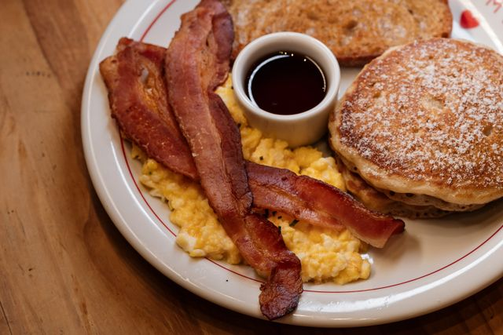

Description
This recipe shows how to make a eggs and bacon for a great American breakfast
Ingredients
- 4 eggs
- Salt and pepper
- 2 cups water
- bacon
Steps
- Crack eggs into bowl. Add a cup of water, and put plenty of salt and pepper in.
- Beat eggs with fork until everything is mixed well
- Put pan on stove for eggs, and grease with butter. Heat on stove at 150 °
- Pour egg mixture into pan, let cook. Flip with spatula to make sure everything is cooked well.
- Grease skillet with butter, heat to 350 °
- Put on 5 strips of bacon, and cook until well done on each side, flip with spatula
- Enjoy your wonderful eggs and bacon. Add more salt and pepper to top it.